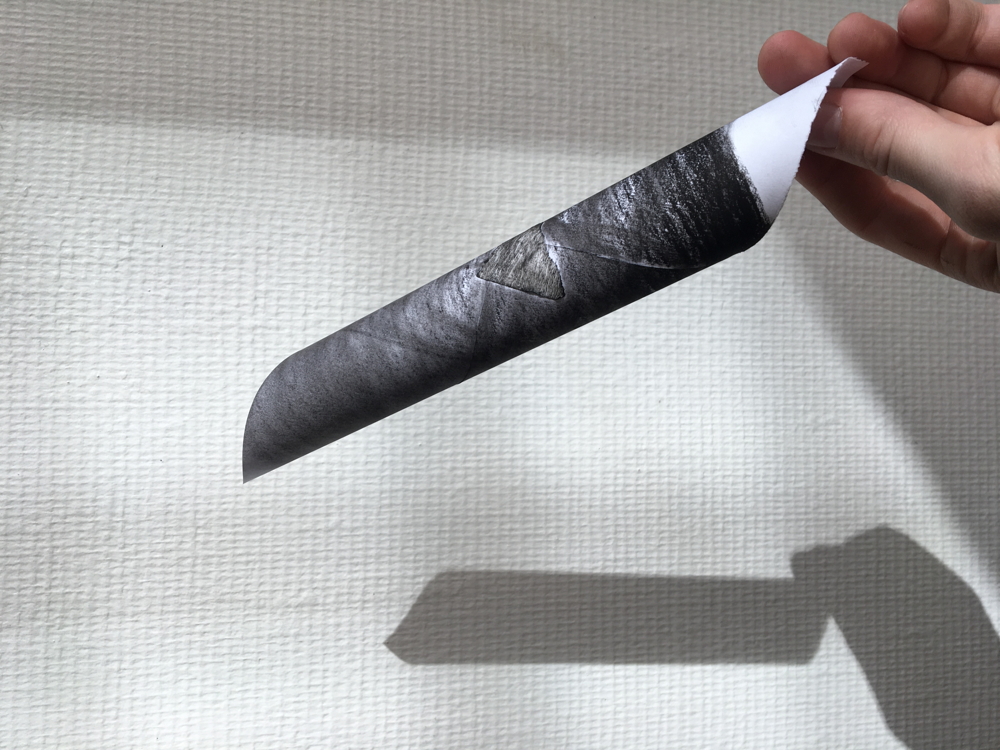
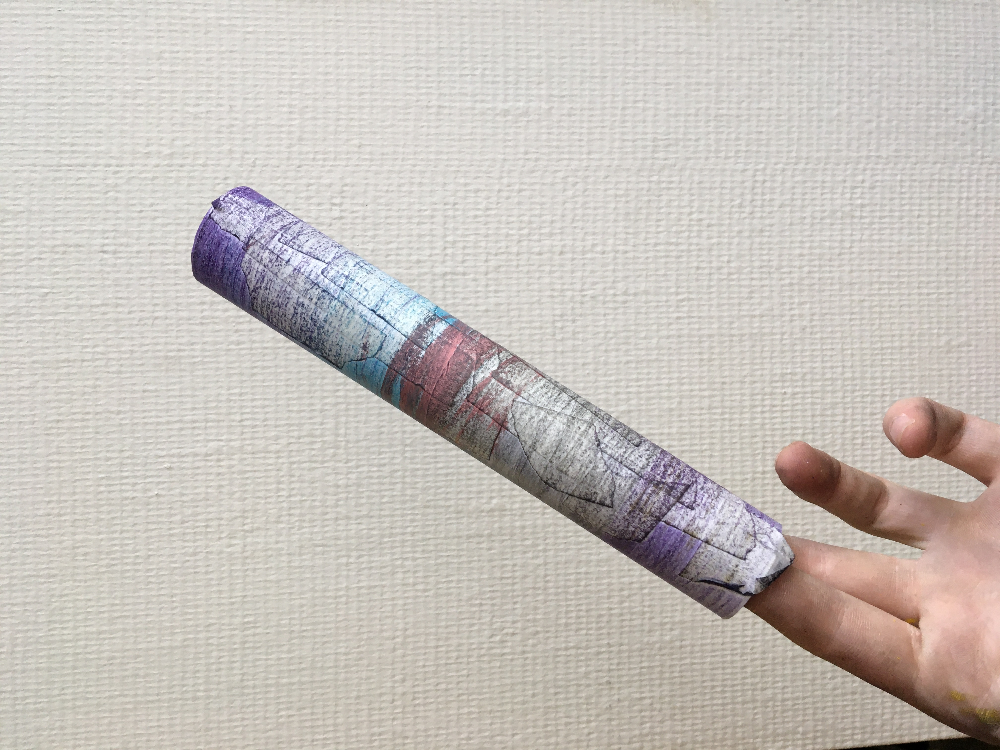
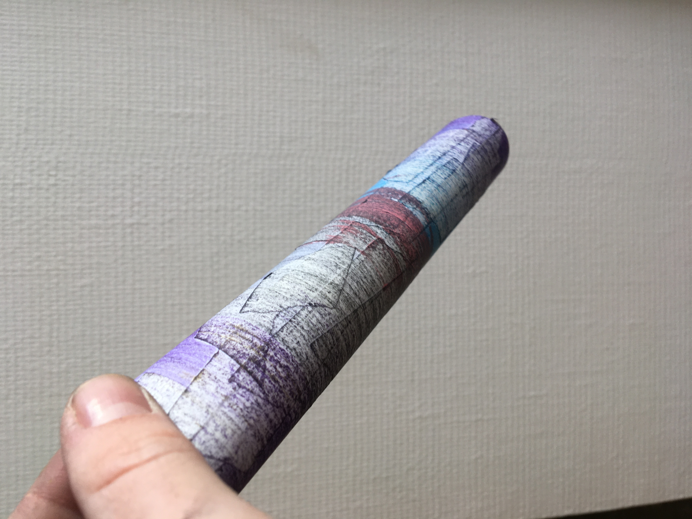
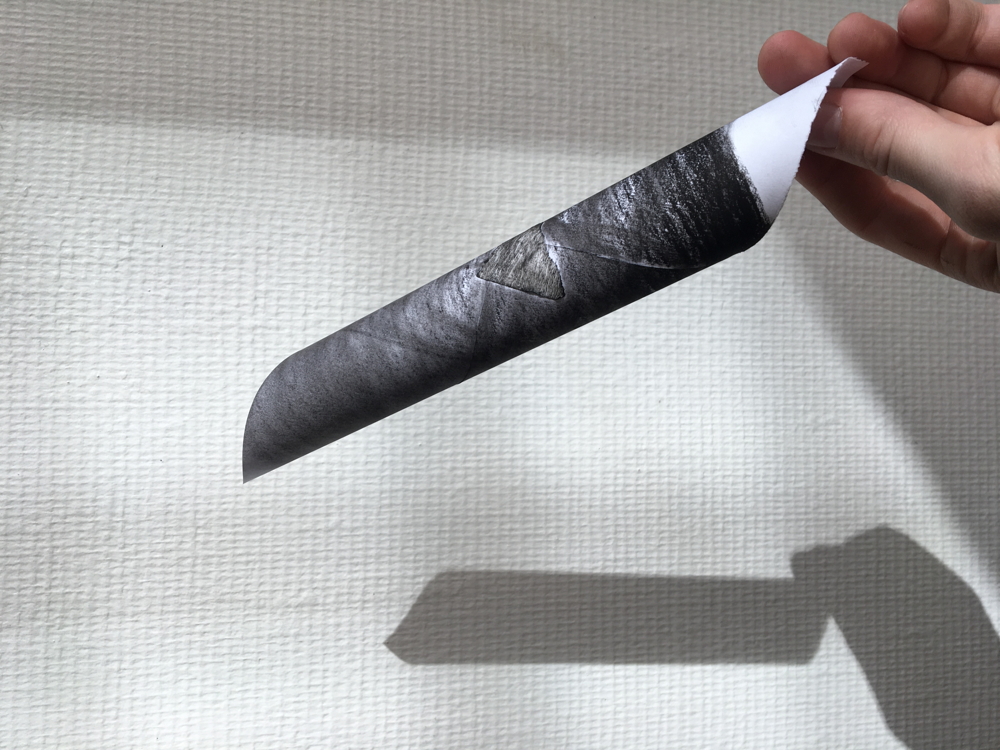
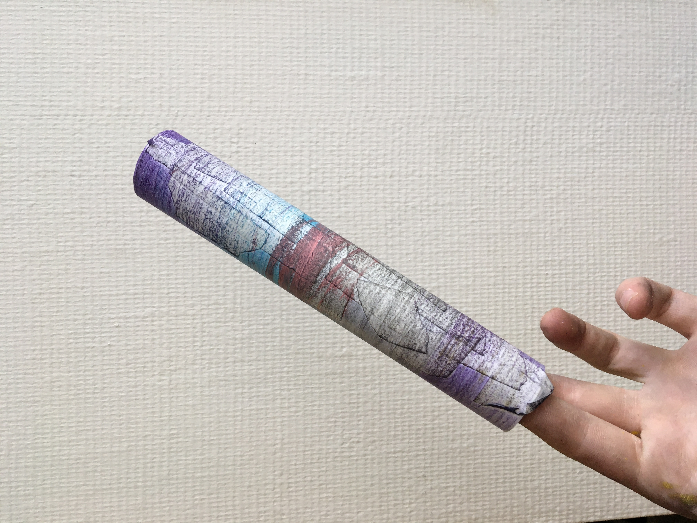
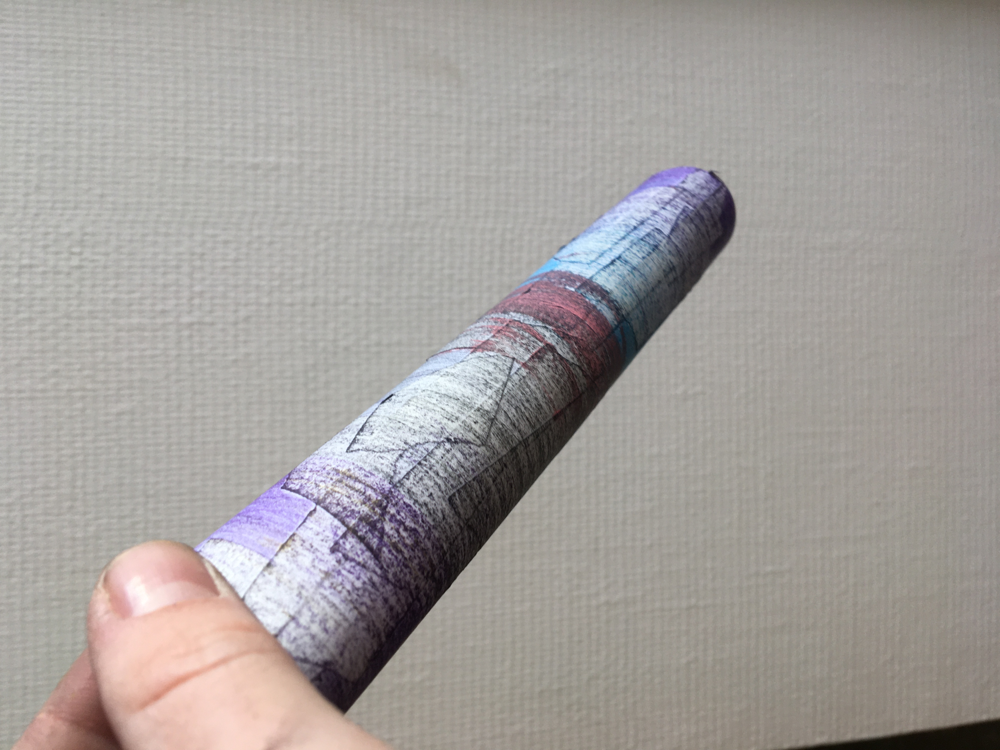

Un tour à crayon est un projet de
recherche qui vise à détourner un outil,
le tour à bois.
J’ai recréé le principe du tour à bois avec
une perceuse, sur laquelle j’ai fixé un
cylindre en bois.
Je viens ensuite y accrocher une feuille
de papier avec du scotch de peintre. Ce
dernier me permet aussi de désigner les
contours de ma zone de travail.
Je dessine ensuite sur la feuille en rotation
avec un crayon ou d’autre médium.
En gardant la même gestuelle, je remplace
la gouge par mon crayon et le morceau de
bois par une feuille.
Je déploie enfin la feuille une fois coloriée.
Les esquisses obtenues sont le résultat
d’une technique détourné comme une
trace de la gestuelle utilisée. Le but était de
créer une nouvelle façon de dessiner.
CONTACT


 




